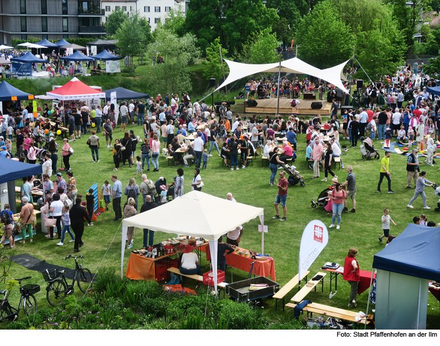

Über uns
Polarisierung, Extremismus und Politikverdrossenheit nehmen zu. Wir setzen ein Zeichen dagegen — mit Musik, Bildung und Begegnung im Bürgerpark Pfaffenhofen.
Das Fest der Demokratie ist eine kulturell-politische Veranstaltung, die am 4. Juli 2026 im Bürgerpark Pfaffenhofen an der Ilm stattfinden wird. Ziel ist es, demokratische Werte lebendig zu vermitteln, Begegnungen zu ermöglichen und insbesondere junge Erwachsene für Teilhabe zu begeistern.
Ausgangspunkt ist die Beobachtung, dass mehr als die Hälfte der Bevölkerung der Demokratie nur noch eingeschränkt vertraut und dass insbesondere junge Erwachsene große Wissenslücken im Bereich historischer und politischer Bildung haben. Demokratie wirkt für viele abstrakt und unnahbar.
Mit dem Fest schaffen wir eine attraktive, niedrigschwellige und interaktive Möglichkeit, um diese Defizite zu adressieren und die demokratische Kultur in der Region zu stärken. Die Verbindung von Musik und Kultur mit politischer Bildungsarbeit eröffnet neue Zugänge — für Menschen, die über klassische Bildungsangebote kaum erreicht werden.

Foto: Stadt Pfaffenhofen an der IlmWarum dieses Fest?
Zunahme von Polarisierung & Extremismus — die Zahl rechtsextremer Straftaten erreicht alarmierende Höhen.
BKA, 2024 ↗Demokratie wirkt abstrakt und unnahbar — über die Hälfte der Bevölkerung hat nur eingeschränktes Vertrauen in die Demokratie.
Körber-Stiftung, 2024 ↗Mangel an politischer Bildung — 40% der 18- bis 29-Jährigen wissen nicht, dass sechs Millionen Juden während der NS-Zeit ermordet wurden.
dpa, 2025 ↗Unsere Ziele
Nicht-engagierte Bürger*innen und junge Erwachsene für politisches Engagement begeistern — besonders Auszubildende, Studierende und Berufseinsteigende.
Familien mit wenig Berührung zu Politik einen Zugang ermöglichen — spielerisch, interaktiv und altersgerecht.
Stärkung politischer Bildung, Förderung von Dialog und Vermittlung von Haltung gegen Extremismus — orientiert am Beutelsbacher Konsens.
Workshops zu Argumentationstechniken gegen Populismus und Extremismus. Kontroverse Darstellung politischer Themen ohne Überwältigung.
Junge Erwachsene motivieren, sich langfristig in Vereinen, Initiativen und Organisationen einzubringen. Das Fest als Auftakt für Folgeprojekte.
Die Attraktivität eines Musikfestivals mit politischer Bildungsarbeit verbinden — so erreichen wir Menschen, die klassische Bildungsformate nicht ansprechen.
Das Fest orientiert sich an den Prinzipien des Beutelsbacher Konsenses: Politische Themen werden kontrovers dargestellt, Teilnehmende werden nicht überwältigt, sondern befähigt, eigene Urteile zu bilden. Alle Formate sind interaktiv und adressatenorientiert gestaltet.
Das Programm kombiniert politische Bildung mit Kultur und Unterhaltung. Auf der Bühne wechseln sich musikalische Acts regionaler Bands und ein bekannter Headliner mit Podiumsdiskussionen und Interviews ab. Ergänzt wird dies durch interaktive Stationen wie den „Demokratie-Check", der erfahrbar macht, was sich in einer Diktatur ändern würde.
Das Fest der Demokratie ist als Auftakt für ein Folgeprojekt konzipiert. Basierend auf den Erfahrungen planen wir, die Veranstaltung jährlich fortzusetzen und als feste Größe im regionalen Kalender zu etablieren.
Open Project e.V.
Organisiert von Open Project e.V. — ein ehrenamtlicher Verein für politische Jugendbildungsarbeit. In enger Zusammenarbeit mit unseren Partnern Queer Pfaffenhofen e.V. (Veranstalter des CSD Pfaffenhofen) und der Stadtjugendpflege Pfaffenhofen (Veranstalter des Jugendkulturfestivals „Saitensprung") wird das Festival auf die Beine gestellt.
Gesamtkoordination, Budgetplanung, Fördermittelakquise und transparente Finanzverwaltung.
Künstler-Booking, Programmgestaltung, Logistik und Zusammenarbeit mit Sicherheits- und Sanitätsdiensten.
Social Media, Printwerbung, Kooperation mit Universitäten und Jugendzentren für maximale Reichweite.
Unsere Partner haben mit dem CSD Pfaffenhofen (Queer Pfaffenhofen e.V.) und dem Jugendkulturfestival „Saitensprung" (Stadtjugendpflege) bereits Veranstaltungen mit jeweils über 1.000 Besucher:innen erfolgreich durchgeführt.
Qualitätssicherung
Befragungen der Teilnehmenden zu Lernerfahrungen, Wahrnehmung und Motivation. Besucherzählung und systematische Auswertung.
Ein eigener Feedback-Stand auf dem Gelände ermöglicht direkte Rückmeldungen. Ergänzt durch Feedbackrunden mit Partnern und Workshopleitungen.
Stärken und Schwächen werden analysiert und für die jährliche Fortführung nutzbar gemacht. Dokumentation und öffentliche Kommunikation der Ergebnisse.